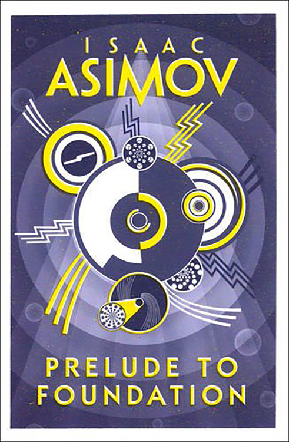

1 - Prelude to Foundation (1988)
Synopsis
It is the year 12,020 G.E. and Emperor Cleon I sits uneasily on the Imperial throne of Trantor. Here in the great multidomed capital of the Galactic Empire, forty billion people have created a civilization of unimaginable technological and cultural complexity. Yet Cleon knows there are those who would see him fall—those whom he would destroy if only he could read the future. Hari Seldon has come to Trantor to deliver his paper on psychohistory, his remarkable theory of prediction. Little does the young Outworld mathematician know that he has already sealed his fate and the fate of humanity. For Hari possesses the prophetic power that makes him the most wanted man in the Empire . . . the man who holds the key to the future—an apocalyptic power to be known forever after as the Foundation.
Download PDF- Author's Note
- 01 - Mathematician
- 02 - Flight
- 03 - University
- 05 - Riddles in the Dark
- 04 - Library
- 05 - Upperside
- 06 - Rescue
- 07 - Mycogen
- 08 - Sunmaster
- 09 - Microfarm
- 10 - Book
- 11 - Sacratorium
- 12 - Aerie
- 13 - Heatsink
- 14 - Billibotton
- 15 - Undercover
- 16 - Officers
- 17 - Wye
- 18 - Overthrow
- 19 - Dors